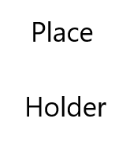

Hello and welcome! My name is Braedon Willesden. I am a Computer Systems major at Kansas State Polytechnic from Hoisington, Kansas.
I have entry-level experience in HTML, CSS, JavaScript, MySQL, and I have played a little bit with C and Python. To see the kinds of things I can do with these, check the projects page. There I have a few things I have worked on either for school, or in my own free time.
Other than computers, I love to play video games and I love music. I know how to play a drumset, and have performed in a local cover band on a few occasions, as well as performing in the Kansas Shrine Bowl marching band for 3 years (for which I was given a specially adressed proclamation by my hometown mayor.) I am currently teaching myself how to play piano.